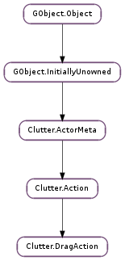

| static | new() |
| get_drag_area() | |
| get_drag_axis() | |
| get_drag_handle() | |
| get_drag_threshold() | |
| get_motion_coords() | |
| get_press_coords() | |
| set_drag_area(drag_area) | |
| set_drag_axis(axis) | |
| set_drag_handle(handle) | |
| set_drag_threshold(x_threshold, y_threshold) |
| Name | Type | Flags | Description |
|---|---|---|---|
| drag-area | Clutter.Rect | r/w | Constrains the dragging to a rectangle |
| drag-area-set | bool | r | Whether the drag area is set |
| drag-axis | Clutter.DragAxis | r/w | Constraints the dragging to an axis |
| drag-handle | Clutter.Actor | r/w | The actor that is being dragged |
| x-drag-threshold | int | r/w | The horizontal amount of pixels required to start dragging |
| y-drag-threshold | int | r/w | The vertical amount of pixels required to start dragging |
| Name | Parameters | Return | Description |
|---|---|---|---|
| drag-begin | Clutter.Actor, float, float, Clutter.ModifierType | The ::drag-begin signal is emitted when the Clutter.DragAction starts the dragging The emission of this signal can be delayed by using the Clutter.DragAction :x-drag-threshold and Clutter.DragAction :y-drag-threshold properties | |
| drag-end | Clutter.Actor, float, float, Clutter.ModifierType | The ::drag-end signal is emitted at the end of the dragging, when the pointer button’s is released This signal is emitted if and only if the Clutter.DragAction ::drag-begin signal has been emitted first | |
| drag-motion | Clutter.Actor, float, float | The ::drag-motion signal is emitted for each motion event after the Clutter.DragAction ::drag-begin signal has been emitted. The components of the distance between the press event and the latest motion event are computed in the actor’s coordinate space, to take into account eventual transformations. If you want the stage coordinates of the latest motion event you can use Clutter.DragAction.get_motion_coords (). The default handler of the signal will call Clutter.Actor.move_by () either on actor or, if set, of Clutter.DragAction :drag-handle using the delta_x and delta_y components of the dragging motion. If you want to override the default behaviour, you can connect to the Clutter.DragAction ::drag-progress signal and return False from the handler. | |
| drag-progress | Clutter.Actor, float, float | bool | The ::drag-progress signal is emitted for each motion event after the Clutter.DragAction ::drag-begin signal has been emitted. The components of the distance between the press event and the latest motion event are computed in the actor’s coordinate space, to take into account eventual transformations. If you want the stage coordinates of the latest motion event you can use Clutter.DragAction.get_motion_coords (). The default handler will emit Clutter.DragAction ::drag-motion, if Clutter.DragAction ::drag-progress emission returns True. |
| Name | Type | Access |
|---|---|---|
| parent_instance | Clutter.Action | r |
Bases: Clutter.Action
The Clutter.DragAction structure contains only private data and should be accessed using the provided API
| Returns: | the newly created Clutter.DragAction |
|---|---|
| Return type: | Clutter.Action |
Creates a new Clutter.DragAction instance
| Returns: | True if the actor is actually constrained (and thus drag_area is valid), False otherwise |
|---|---|
| Return type: | bool, drag_area: Clutter.Rect |
Retrieves the “drag area” associated with action, that is a Clutter.Rect that constrains the actor movements, in parents coordinates.
| Returns: | the axis constraint |
|---|---|
| Return type: | Clutter.DragAxis |
Retrieves the axis constraint set by Clutter.DragAction.set_drag_axis ()
| Returns: | a Clutter.Actor, used as the drag handle, or None if none was set |
|---|---|
| Return type: | Clutter.Actor |
Retrieves the drag handle set by Clutter.DragAction.set_drag_handle ()
| Return type: | x_threshold: int, y_threshold: int |
|---|
Retrieves the values set by Clutter.DragAction.set_drag_threshold ().
If the Clutter.DragAction :x-drag-threshold property or the Clutter.DragAction :y-drag-threshold property have been set to -1 then this function will return the default drag threshold value as stored by the Clutter.Settings :dnd-drag-threshold property of Clutter.Settings.
| Return type: | motion_x: float, motion_y: float |
|---|
Retrieves the coordinates, in stage space, of the latest motion event during the dragging
| Return type: | press_x: float, press_y: float |
|---|
Retrieves the coordinates, in stage space, of the press event that started the dragging
| Parameters: | drag_area (Clutter.Rect or None) – a Clutter.Rect |
|---|
Sets drag_area to constrain the dragging of the actor associated with action, so that it position is always within drag_area, expressed in parent’s coordinates. If drag_area is None, the actor is not constrained.
| Parameters: | axis (Clutter.DragAxis) – the axis to constraint the dragging to |
|---|
Restricts the dragging action to a specific axis
| Parameters: | handle (Clutter.Actor or None) – a Clutter.Actor, or None to unset |
|---|
Sets the actor to be used as the drag handle.
| Parameters: |
|
|---|
Sets the horizontal and vertical drag thresholds that must be cleared by the pointer before action can begin the dragging.
If x_threshold or y_threshold are set to -1 then the default drag threshold stored in the Clutter.Settings :dnd-drag-threshold property of Clutter.Settings will be used.